In this document we re-visit the collapsible channel problem yet again – this time to demonstrate the use of spatial adaptivity in fluid-structure interaction problems. In such problems, two additional issues have to be addressed:
- The assignment of positional history values for newly-created nodes
- Updating the node-update data in refineable AlgebraicMeshes
We start with a brief reminder of oomph-lib's mesh adaptation procedures to highlight what additional complications arise in fluid-structure interaction problems, and then explain how these problems are addressed.
The assignment of positional history values for newly-created nodes
What is the problem?
We first discussed the use of spatial adaptivity for time-dependent problems in the context of the unsteady heat equation. We showed that whenever a new node is created, oomph-lib's mesh adaptation procedures automatically assign the nodal values and "history values" (the auxiliary values that are used by the Node's TimeStepper to approximate time-derivatives of the nodal values) for the newly-created Node by interpolating between the corresponding values in the new Node's father element.
Similarly, an initial assignment for the newly-created Node's current and previous positions (required for the evaluation of the mesh-velocities in the ALE formulation of the time-derivatives) is made by interpolating between the current and previous nodal positions of the new Node's father element. This default assignment is subsequently overwritten if the father element is associated with a MacroElement, in which case the newly-created Node's current position is determined by the father element's MacroElement representation. This ensures that the mesh refinement process respects curvilinear domain boundaries, as discussed
elsewhere. The same strategy is used to over-write the default assignment for a new Node's previous positions: They are re-assigned, based on the father element's MacroElement - representation, evaluated at the relevant previous timesteps.
To illustrate the process, consider the sketch below and assume that the time-integration of the Navier-Stokes equations is performed with a BDF<2> timestepper – a timestepper that requires two history values (the solution and the nodal positions at two previous timesteps) to evaluate the time-derivative 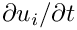 in the momentum equations. The position of the nodes in the collapsible part of the channel is determined by the MacroElement - based representation of the CollapsibleChannelDomain, using the wall shape obtained from the compound MeshAsGeomObject that we created from the discretisation of the elastic wall, shown in green.
Assume that the initial mesh is sufficiently fine to resolve the solution at  and 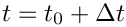. At 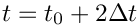, the automatic mesh adaptation splits one of the fluid elements, creating the five new
and 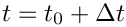. At 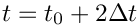, the automatic mesh adaptation splits one of the fluid elements, creating the five new Nodes, shown in red (for simplicity we only show the fluid elements' vertex nodes). Their position is determined by the father element's MacroElement mapping, using the current position of the MeshAsGeomObject, obtained from the interpolation between the nodal positions of its SolidNodes (shown as green circles).
So far, so good! A subtle problem arises when we try to assign the positional history values for the newly-created Nodes. The evaluation of the MacroElement mapping at the previous timesteps (required to determine the positions the newly-created Nodes would have had, if they had already existed at previous timesteps) requires access to the previous wall shapes. In the non-FSI problem discussed earlier, the wall shape was given analytically and could therefore be evaluated at arbitrary times. In the FSI problem considered here, the previous wall shape is not available as the previous positions of the SolidNodes are not required (and are therefore not stored) for the solution of the (steady!) wall equations.
The solution: The Steady<NSTEPS> timestepper
The solution to the problem is simple: Recall that the final entry in the argument list of oomph-lib's mesh constructors specifies the TimeStepper to be used for the evaluation of any time-derivatives. The TimeStepper's member function TimeStepper::ntstorage() specifies the total number of values (the current value plus the number of history values) required to evaluate the time-derivatives; it is used by the FiniteElement::construct_node(...) function to create the required amount of storage at the elements' Nodes when the Nodes are created in the mesh constructor. To maximise the potential for code-reuse, we always provide a default argument for the pointer to the TimeStepper – a pointer to a static instantiation of oomph-lib's dummy TimeStepper, Steady<0>. This ensures that the "user" can use the mesh for steady problems without having to artificially create a dummy TimeStepper that would be completely irrelevant for his/her problem.
For instance, the full interface to the constructor of the OneDLagrangianMesh, defined in one_d_lagrangian_mesh.template.h is given by
Thus, when we constructed the wall mesh in the non-adaptive version of the driver code fsi_collapsible_channel.cc, using the statements
the use of the dummy TimeStepper, Steady<0> was implied. All time-derivatives computed by this TimeStepper evaluate to zero, and the TimeStepper does not require (or request) any storage for history values. This is a sensible default for problems that are either inherently steady (such as problems involving the Poisson equations, say) or for steady versions of time-dependent PDEs (such as the steady Navier-Stokes equations). In the present problem, we wish to retain the dummy character of the TimeStepper so that all time-derivatives in the FSIHermiteBeamElements are set to zero, while retaining a limited history of the SolidNode's previous positions so that the wall shape at previous timesteps can be evaluated. This is possible by creating a Steady timestepper with a non-zero template argument: The class
provides a dummy TimeStepper that requires (and maintains) NSTEPS history values that represent the nodal positions (or nodal values) at NSTEPS previous timesteps. However, these history values are not used to evaluate any time-derivatives – all time-derivatives computed by this TimeStepper are zero.
If the Navier-Stokes equations are discretised with a BDF<2> timestepper, the evaluation of the mesh velocity in the ALE representation of the time-derivatives requires the nodal position at the two previous timesteps. This is achieved by passing a pointer to a specifically-constructed Steady<2> timestepper to the wall mesh. Here is the relevant code fragment from the Problem constructor in the driver code fsi_collapsible_channel_adapt.cc:
Updating the node-update data in refineable AlgebraicMeshes
When discussing the non-FSI version of the collapsible channel problem we explained how oomph-lib's mesh adaptation procedures assign the node-update data for newly-created AlgebraicNodes. Recall that the node-update data comprises:
- A pointer to the
AlgebraicMeshthat implements the node-update function.
- An ID for the node-update function. This is used in cases in which different regions of the
AlgebraicMeshare updated by different node-update functions. The ID has a default value of 0; this is used if there is only a single node-update function, as in theAlgebraicCollapsibleChannelMesh.
- A vector of (pointers to)
GeomObjectsthat are involved in the node update.
- A vector of reference values, such as the intrinsic coordinates of reference points on the
GeomObjects.
By default, we assume that a newly-created AlgebraicNode is updated by the same node-update function as the AlgebraicNodes in its father element. Therefore we pass the pointer to the AlgebraicMesh, the node-update function ID, and the vector of pointers to GeomObjects to the newly-created AlgebraicNodes, and interpolate the reference values between those stored at the AlgebraicNodes in the father elements.
In most cases this provides a sensible default. For instance, it is hard to imagine a situation in which it would be sensible to update the position of newly-created AlgebraicNodes by a procedure that differs from that used for the surrounding AlgebraicNodes that already existed in the father element. Similarly, since the reference values vary from node to node (if they were constant we would not store them in the AlgebraicNodes' node-update data but in the AlgebraicMesh that implements the node update!) it makes sense to assign the values at newly-created AlgebraicNodes by interpolation. For instance, in the AlgebraicCollapsibleChannelMesh one of the reference values is the 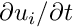 - coordinate of the reference point on the fixed lower wall. For the AlgebraicNodes that already existed in the coarse base mesh, this value is given by the the AlgebraicNodes' - coordinate in the undeformed mesh. Interpolation of this value for the newly-created AlgebraicNodes results in an axially uniform subdivision of the refined elements.
The same procedure may be used to assign the reference value that represents the intrinsic coordinate of the reference point on the upper wall – at least as long as the upper wall is only ever addressed as a compound GeomObject, as in our original (slow!) code that employed a MacroElement - based node update. The procedure is illustrated in the sketch below: The upper wall is parametrised by a compound GeomObject in which the beam's Lagrangian coordinate 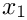 doubles as the GeomObject's intrinsic coordinate 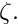 The green arrows indicate the reference points for nodes I, II, III, IV and V in the coarse initial mesh. The reference values 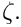 are stored in the node-update data of nodes I,...,V, respectively. The red arrow identifies the reference point for the newly-created node VI whose reference coordinate ![$ \zeta_{IV}^{[ref]} $](form_8.png) is created by interpolation between the reference values of nodes II, III, IV and V, i.e. the nodes in its father element.
is created by interpolation between the reference values of nodes II, III, IV and V, i.e. the nodes in its father element.

Unfortunately, the default assignment is not appropriate for nodes that are updated by the (much faster) algebraic node update procedure implemented in the AlgebraicCollapsibleChannelMesh. Its AlgebraicNodes store pointers to the sub-GeomObjects (i.e. the FSIHermiteBeamElements in the wall mesh) that contain their reference points, and the values of the local coordinate at which the reference points are located. This is illustrated in the sketch below in which the sub- GeomObjects, parametrised by their local coordinates 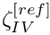 are shown in magenta. Note that the reference points for nodes II and IV are located in one sub- GeomObject, those for nodes III and V are located in another.

It obviously does not make sense to create the reference value for the newly-created node VI by interpolation. The node update data must be created from scratch in two steps:
- Determine the newly-created Node's intrinsic reference coordinate within the compound
MeshAsGeomObject(i.e. the continuous beam's Lagrangian coordinate), 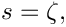 by interpolation. (Recall that theAlgebraicNodesin the non-refineableAlgebraicCollapsibleChannelMeshalready stored this coordinate, even though it was not used during the node-update itself).
- Use the
GeomObject::locate_zeta(...)function to determine sub-GeomObjectand the local coordinate within it, at which the reference point with Lagrangian coordinate is located.
To ensure that this procedure is performed automatically after every mesh adaptation, it should be implemented in the function AlgebraicMesh::update_node_update(...). This function is defined as a pure virtual function in the AlgebraicMesh base class in order to force the mesh writer to assess if the default procedure for the assignment of the node-update data for newly-created AlgebraicNodes, described above, is appropriate. If it is, the function may, of course, be implemented as an empty function. We note that the function AlgebraicMesh::update_node_update(...) is called after the default values for the node-update data have been assigned. It is therefore only necessary to correct those values for which the default procedure is inappropriate.
To illustrate the procedure, here is the class definition for the RefineableAlgebraicCollapsibleChannelMesh. The mesh is derived by multiple inheritance from the non-refineable AlgebraicCollapsibleChannelMesh and the RefineableQuadMesh base class. The constructor calls the constructors of both underlying meshes and then sets up the QuadTreeForest:
We overload the (empty) previous implementations of AlgebraicMesh::update_node_update(...) with our own function:
Here is the actual implementation of this function. We start by extracting the reference values that were already assigned by the default procedure:
Recall from the discussion of the algebraic node-update strategy for the non-refineable version of the problem that reference values 0 and 1 store the - coordinate along the fixed bottom wall, and the fractional height of the node in the cross-channel direction, respectively. These values are interpolated correctly and do not have to be corrected. The third reference value is the intrinsic coordinate of the reference point in its sub-GeomObject. This needs to be re-computed and we will assign the corrected value below. The fourth reference value is the intrinsic coordinate of the reference point within the compound MeshAsGeomObject. We store this in a temporary variable:
Next, we extract vector of (pointers to the) GeomObjects involved in this node's node-update from the node.
Now we use the GeomObject::locate_zeta(...) function to obtain the pointer to the (sub-)GeomObject and the intrinsic coordinate within it, at which the reference point (identified by its intrinsic coordinate zeta in the compound GeomObject) is located:
We over-write the first (and, in fact, only) entry in the vector of GeomObjects that are involved in this node's node-update with the pointer to the (sub-)GeomObject just located:
Similarly, we over-write the third reference value with the local coordinate of the reference point within its (sub-)GeomObject.
The incorrect entries in the two vectors geom_object_pt and ref_value have now been corrected. We can wipe the node's node-update data and re-assign it:
That's it!
Results
The figure below shows a snapshot of the flow field during the early stages of the oscillation. The computation was performed with refineable Crouzeix-Raviart elements, using the RefineableAlgebraicCollapsibleChannelMesh. Note how the automatic mesh adaptation has refined the mesh in the regions in which the Stokes layers create steep velocity gradients.

The driver code
The driver code fsi_collapsible_channel_adapt.cc for the spatially adaptive problem is a trivial extension of the non-adaptive code fsi_collapsible_channel.cc, therefore we will not provide a detailed listing here. Comparing the two source codes (e.g. with sdiff) shows that spatial adaptivity may be enabled with a few straightforward changes:
- Change the fluid mesh from the
MacroElementNodeUpdateCollapsibleChannelMeshto theMacroElementNodeUpdateRefineableCollapsibleChannelMesh(or from theAlgebraicCollapsibleChannelMeshto theRefineableAlgebraicCollapsibleChannelMesh).
- Change the element type from
TaylorHoodElement<2>toRefineableQTaylorHoodElement<2>(orQCrouzeixRaviartElement<2>toRefineableQCrouzeixRaviartElement<2>).
- Add the functions
Problem::actions_before_adapt()andProblem::actions_after_adapt(); see below.
- Explicitly specify the
Steady<2>timestepper for the wall mesh, as discussed above.
- Create an error estimator, specify the target errors for the adaptation, and call the spatially adaptive Newton solver.
Actions before and after solve
As in the non-FSI problem, we use the function Problem::actions_before_adapt() to delete the applied traction elements before the mesh adaptation:
As usual, we then employ the function Problem::actions_after_adapt() to re-attach traction elements to the fluid elements that are located at the mesh's inflow boundary (mesh boundary 5) when the mesh adaptation is complete.
Next, we pin the redundant pressure degrees of freedom (see another tutorial for details) and pass the function pointer to the function that defines the prescribed traction to the applied traction elements:
We specify the function FSI_functions::apply_no_slip_on_moving_wall() as the auxiliary node-update function for all fluid nodes that are located on the FSI boundary (mesh boundary 3) – this ensures that the fluid velocity is updated (via the no-slip condition) whenever the position of a fluid node on this boundary is updated. For fluid nodes that already existed before the mesh adaptation this statement over-writes the function pointers already stored at those nodes. Note the use of compiler flags to distinguish between the two node-update strategies.
Finally, we re-generate the FSI lookup scheme that establishes which fluid elements are located next to the Gauss points in the beam elements. This is necessary because the previous lookup scheme, set up in the problem constructor, becomes invalid if any of the fluid elements next the wall are split during the refinement process.
Comments and Exercises
Exercises
- The post-processing function
doc_solution(...)outputs the wall shape at the present and the two previous timesteps: The output filewalli-j.at the i - th timestep and contains the wall shape at the j - th previous timestep. To check that thedatis createdSteady<2>timestepper correctly maintains the time-history of the wall displacement field, confirm thatwall3-2.datis identical towall2-0.dat, say.
- Explore what happens if the
Steady<2>timestepper is not specified explicitly. [Hint: Unless you have compiled the library with-DRANGE_CHECKING, the code will die with a segmentation fault – use the debugger to determine where the segmentation fault occurs and explain what goes wrong.]
- Explain why refineable
MacroElementNodeUpdateMeshesdo not require aupdate_node_update()function.
- Explore what happens if the empty function
AlgebraicCollapsibleChannelMesh::update_node_update(...)is not overloaded in the derived refineable meshRefineableAlgebraicCollapsibleChannelMesh. [Hint: Inspect the plot of the initial conditions in the output filesoln0.datto see how the uniform refinement performed in the problem constructor fails if the functionRefineableAlgebraicCollapsibleChannelMesh::update_node_update(...)is not executed.]
Source files for this tutorial
- The source files for this tutorial are located in the directory:
demo_drivers/interaction/fsi_collapsible_channel/
- The driver code is:
demo_drivers/interaction/fsi_collapsible_channel/fsi_collapsible_channel_adapt.cc
PDF file
A pdf version of this document is available.